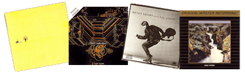

{kind=link}
| Ronney Abramson | Ronney Abramson |
| Junior Byron | Sunshine |
| Robert Charlebois | Robert Charlebois (Lindbergh) Un Gars Ben ORDINAIRE Québec Love Live de Paris Robert Charlebois (J’t’aime Comme un Fou) |
| Claude Denjean | Moog! Open Circuit |
| Danger | Danger |
| Delta | Delta |
| Jean-Pierre Ferland | Jaune Soleil La Pleine Lune Quand on aime on a toujours 20 ans |
| Ferland, Charlebois, Léveillé, Deschamps,Vigneault |
1 Fois 5 |
| Louise Forestier | Louise Forestier |
| Lee Gagnon | Je Jazz |
| Garolou | Garolou |
| Alan Gerber | Tied On |
| Richard Gresko | World Favorite Piano Masterpieces |
| The Hotel Orchestra | Hotel Orchestra |
| Pierre Lalonde | Ça pousse |
| Catherine Lara | Coup d’Feel Geronimo |
| Leyden Zar | Leyden Zar |
| John Lennon | Give Peace a Chance |
| Lougarou | Lougarou |
| Man Made | Man Made |
| Anna McGarrigle | Complainte pour Ste Catherine |
| Wilson Pickett | I Want You |
| Yoko Ono | Remember Love |
| Olympics 1976 | Musique des cérémonies officielles Red box, tirage limité |
| Ginette Reno | Aimez-le si fort Un peu plus haut, un peu plus loin |
| Tim Ryan | the Runner |
| Vladimir Vissotsky | Vladimir Vissotsky |
| Charles Aznavour | |
| Renée Claude | |
| Jerry Devilliers | |
| Monique Gaube | |
| Pierre Leduc | |
| Pierre Létourneau | |
| Anne Joyal | |
| L’Infonie de Walter Boudreau | |
| Los Tres Compadres | |
| Mireille Mathieu Centre des Arts d’Ottawa | |
| The Bells | |
{kind=link}
| April Wine | First Glance Harder...Faster |
| Bryan Adams | Cuts Like A Knife You Want if You Got It |
| ASIA | Alpha |
| Aut’chose | Aut’chose |
| Alain Barriere | Tu t’en vas |
| Bee Gees | Children of the World Saturday Night Fever |
| David Bowie | Tonight |
| Cat Stevens | Numbers Izitso Back to Earth |
| Robert Charlebois | Solide Robert Charlebois (Le Mont Athos) Longue Distance |
| Chicago | Chicago 13 |
| Julien Clerc | Julien Clerc |
| Crack the Sky | Safety in Numbers |
| Eclipse | Eclipse |
| Jean-Pierre Ferland | Le Showbusiness |
| Roberta Flack | Roberta Flack |
| Lewis Furey | Lewis Furey |
| Serge Fiori | Serge Fiori |
| Glass Tiger | The Thin Red Line |
| Corey Hart | Boy in the Box Fields of fire |
| Ian Hunter | Overnight Angels |
| Lavender Hill Mob | Street of Dreams |
| Luba | Between the Earth & the Sky |
| Kate & Anna McGarrigle | Love Over and Over |
| Catherine Lara | Coup d’Feel Geronimo |
| Men Without Hats | Pop Goes the World |
| Kim Mitchell | Shaking Like a Human Being |
| Bruce Miller | Magic Night |
| Nazareth | Close Enough for Rock’n Roll Play’n’the Game Expect No Mercy |
| The Nylons | Rockapella |
| Northern Pikes | Secrets of the Alibi |
| Peter Paul & Mary | CBC TV Special at Hamilton Place |
| Paul Piché | Paul Piché Nouvelles d’Europe Intégral |
| Wilson Pickett | I Want You |
| Pilot | Morin Heights |
| The Police | Synchronicity Ghost in the Machine Every Little Thing She Does is Magic (single) |
| Queensryche | Operation Mindcrime |
| Rainbow | Straight Between the Eyes |
| The Ramones | Leave Home |
| Keith Richards | Talk is Cheap |
| Rush | Permanent Waves Signals Moving Pictures Exit Stage Left Grace Under Pressure Presto Roll the Bones Counterparts |
| Starcastle | Fountains of Light |
| Sting | Dream of the Blue Turtles |
| Streetheart | Under Heaven Over Hell Quicksand Shoes |
| Teaze | One Night Stands |
| Ian Thomas | Ian Thomas |
| Toronto | Head On |
| Uzèb | Uzèb |
| Valdy | Valdy |
| Vladimir Vissotsky | Vladimir Vissotsky |
| Nanette Workman | Nanette Workman Starmania Chaude |
{kind=link}